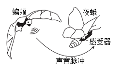

2019年北京市中考生物试题 · 选择题 第11、12、13、14、15题 · 对应解析
11. 若人体血糖长期较高，可能分泌不足的激素是（ ）
A. 性激素B. 胰岛素C. 甲状腺激素D. 生长激素
【答案】B
【解析】
【分析】此题可根据人体内几种激素的功能和分泌异常时出现的病症解答。若人体血糖长期较高，则可能是患糖尿病。
【详解】性激素是由睾丸（男性）或卵巢（女性）分泌，其作用是促进性器官成熟和第二性征的正常发育、维持性功能。A错误；胰岛素是由胰岛细胞分泌，功能是调节糖在人体内的吸收、利用、转化，降低血糖浓度。分泌过少会患糖尿病，分泌过多患低血糖。B正确；甲状腺激素是由甲状腺分泌，能促进新陈代谢，促进生长发育，提高神经系统的兴奋性。分泌过少时，幼年患呆小症；分泌过多，成年患甲亢。C错误；生长激素是由垂体分泌，功能是调节人体的生长发育。分泌过少，幼年会患侏儒症；分泌过多，幼年患巨人症，成年患肢端肥大症。D错误。
【点睛】本题要求掌握的是激素的功能和分泌异常时的病症，注意梳理并熟记。
12. 大熊猫的性别决定与人类相似。大熊猫体细胞中有21对染色体。雌性大熊猫正常卵细胞的染色体组成为（ ）
A. 20条+XB. 20条+YC. 20对+XXD. 21条+X
【答案】A
【解析】
【分析】生物的体细胞的染色体成对，在形成生殖细胞过程中，每对体细胞的染色体各有一条进入生殖细胞，因此生殖细胞的染色体成单，是体细胞的一半。
【详解】人的性别是由性染色体决定的，性染色体为XY时，是男性，性染色体为XX时，是女性。大熊猫的性别决定与人类相似，体细胞的性染色体为XY时，是雄性，体细胞的性染色体为XX时，是雌性。大熊猫的体细胞中有21对染色体，产生的生殖细胞是21条，那么正常卵细胞的染色体组成为20条+X。A符合。
【点睛】本题要求掌握的是生物体细胞在形成生殖细胞过程中数量的变化。
13. 我国实施计划免疫，有计划地对儿童进行预防接种，以控制传染病。下列叙述错误的是（ ）
A. 疫苗相当于抗原B. 预防接种后体内可产生相应抗体
C. 预防接种是针对特定病原体的免疫D. 接种一次即可终身具有免疫能力
【答案】D
【解析】
【分析】此题可根据抗原和抗体的特点分析解答。
【详解】抗原是指引起人体产生抗体的物质，如病原体。接种疫苗可刺激人体的淋巴细胞产生抗体，疫苗相当于抗原。A正确；预防接种属于计划免疫，是根据某些传染病的发病规律，有计划的给儿童进行接种，以达到预防、控制和消灭相应传染病的目的。预防接种后体内可产生相应抗体。如接种卡介苗可以预防结核病。B正确；预防接种是针对特定病原体的免疫，接种卡介苗可以预防结核病，接种百白破疫苗，可以预防百日咳、白喉和破伤风三种疾病。C正确；一般情况下，接种一次疫苗不可能获得终身免疫。D错误。
【点睛】本题考查的是抗原、抗体和预防接种，要求理解和掌握。
14. 蝙蝠依靠回声定位捕食夜蛾。当二者距离较近时夜蛾作不规则飞行，距离较远时夜蛾直线飞行，以便尽快逃离，这种逃生行为生来就有。下列相关叙述错误的是（ ）

A. 夜蛾可通过感受器接受声音脉冲的刺激
B. 夜蛾的逃生行为属于先天性行为
C. 夜蛾采取不同的策略逃生是自然选择的结果
D. 夜蛾具有不同的逃生策略与蝙蝠捕食无关
【答案】D
【解析】
【分析】此题可根据生物能对刺激作出反应、动物的行为和自然选择的相关内容解答。
【详解】夜蛾可通过感受器接受声音脉冲的刺激，然后作出逃离反应。A正确；夜蛾的逃生行为是生来就有的，由体内的遗传物质决定的行为，属于先天性行为。B正确；夜蛾采取不同的策略逃生，是夜蛾和蝙蝠长期的生存斗争的结果，即自然选择的结果。 C正确；夜蛾具有不同的逃生策略是蝙蝠对夜蛾的选择。D错误。
【点睛】此题考查的是对先天性行为和自然选择的掌握，要注意对概念的理解。
15. 下列相关食物的保存方法，错误的是（ ）
A. 真空包装粽子B. 常温保存熟食C. 灭菌保存牛奶D. 冷藏运输荔枝
【答案】B
【解析】
【分析】食物腐败变质是由于微生物的生长和大量繁殖而引起的，根据食物腐败变质的原因，食品保存要尽量杀死或抑制微生物的生长和繁殖。传统的食品保存方法有盐腌、糖渍、干制（晒干、风干）、烟熏、酒泡等；现代的贮存方法主要有罐藏、脱水、冷冻、真空包装、添加防腐剂等。
【详解】真空包装有利于抑制食品内好氧菌的生长和繁殖，达到食品保存的目的。A正确；常温情况下，微生物容易大量生长和繁殖，使食物腐败变质，不利于食物保存。B错误；灭菌保存牛奶，是将牛奶中的微生物杀死。C正确；冷藏是利用低温抑制微生物繁殖，并且能降低荔枝的呼吸作用，有利用水果的保存。D正确。
【点睛】本题考查的是根据食物腐败变质的原因科学的保存食物，要求掌握并能在日常中应用。
二、非选择题